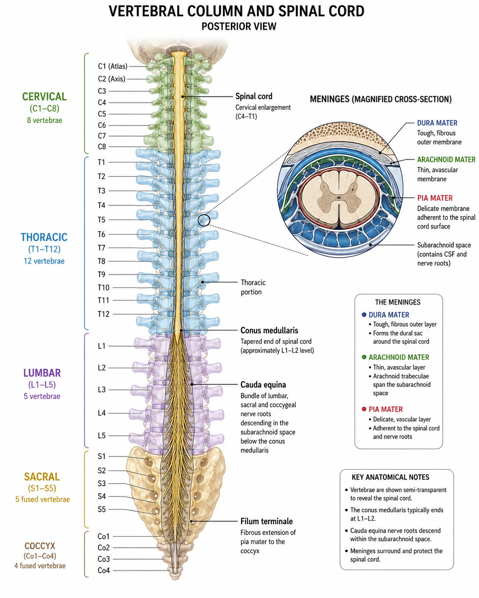
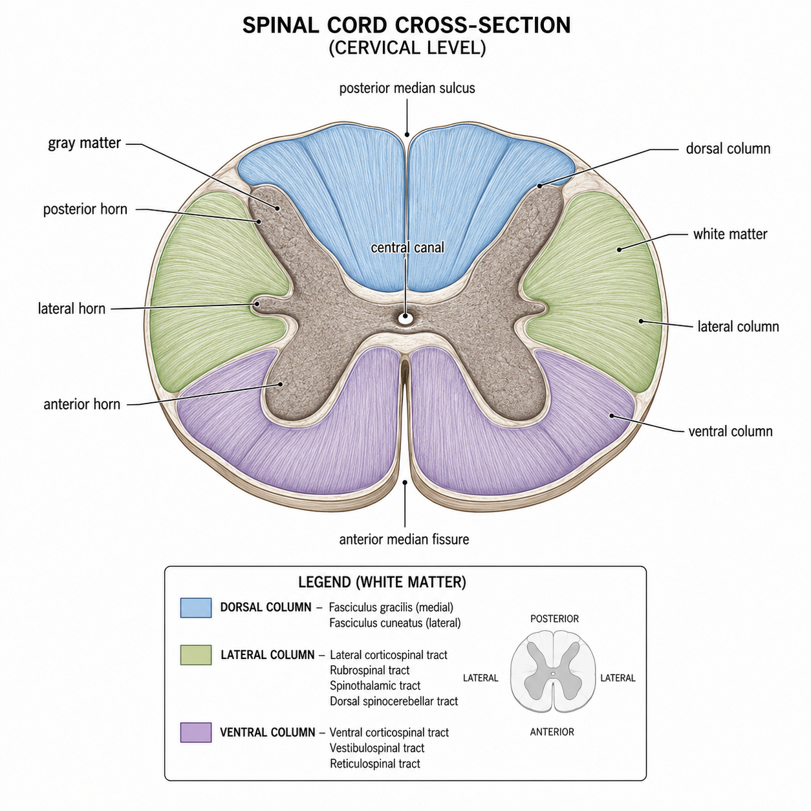

Longitudinal Structure — Top to Bottom
Landmarks Along the Cord — Click Each
Reference — Vertebral Column & Spinal Cord

The cord runs from the foramen magnum to the conus medullaris (≈ L1–L2); below that, the cauda equina nerve roots continue down to their exits.
Cross-Section — The Butterfly
Gray Matter, White Matter & the Canal — Click Each
Reference — Spinal Cord Cross-Section

Central gray matter (cell bodies, shaped like a butterfly) is wrapped by white matter (myelinated tracts). The central canal and gray commissure sit at the middle.
Roots & the Birth of a Spinal Nerve
How Sensory In & Motor Out Become One Nerve — Click Each
Two Functions of the Spinal Cord
Reflex Center & Communication Highway
1 · Reflex Center
Fast, automatic responses
The gray matter of the cord can process a stimulus and trigger a response without waiting for the brain — a spinal reflex. This produces rapid, involuntary reactions that protect the body. (Explored in App 11.5 — Reflexes.)
2 · Conduit to/from the Brain
Two-way communication highway
The white matter tracts carry sensory impulses up to the brain (ascending tracts) and motor impulses down from the brain to effectors (descending tracts). (Explored in App 11.6 — Sensory & Motor Pathways.)